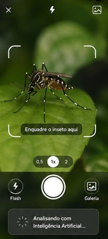
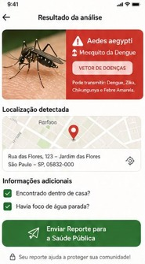
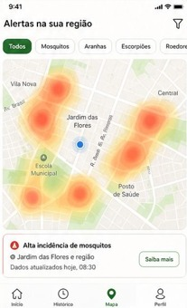

Vetor Alerta
Vigilância colaborativa com Inteligência Artificial para identificar e monitorar vetores e riscos à saúde pública.
O Vetor Alerta é uma plataforma que conecta cidadãos, agentes de vigilância e especialistas. A partir de registros com imagem e localização, a Inteligência Artificial faz uma identificação preliminar e transforma ocorrências isoladas em informações úteis para ações preventivas mais rápidas e eficientes.
Problema e justificativa
A identificação rápida de vetores e riscos é essencial para a prevenção, a vigilância e o planejamento em saúde pública.
Situação investigada
O monitoramento de vetores, insetos, animais e outros riscos à saúde pública costuma ser fragmentado e lento, dificultando a detecção precoce de áreas de atenção.
Quem é afetado
A população em geral, agentes de vigilância, especialistas e a gestão pública, que dependem de dados confiáveis para agir preventivamente.
Por que vale a pena
Ao reunir dados da população e da vigilância em uma só plataforma, ocorrências isoladas se tornam dados úteis para decisões mais rápidas e direcionadas.
Solução proposta
Uma plataforma de vigilância colaborativa que usa Inteligência Artificial, geolocalização e dados para identificar e monitorar vetores e riscos à saúde pública.
Como funciona
- Registre uma ocorrência: fotografe ou selecione uma imagem do vetor ou animal.
- IA analisa: a imagem recebe uma identificação preliminar.
- Localização: a ocorrência pode ser associada a um local para mapeamento.
- Acompanhe e valide: ocorrências podem ser analisadas e reavaliadas por responsáveis.
- Gere informação: os registros ajudam a identificar padrões e áreas de atenção.
Funcionalidades e estado
Registro com foto Implementada
Envio de imagem do vetor ou animal para análise.
Análise por IA Em desenvolvimento
Identificação preliminar automática da imagem.
Geolocalização e mapa Em desenvolvimento
Associação da ocorrência a um local para mapeamento.
Triagem e validação Planejada
Análise e reavaliação por responsáveis e especialistas.
Painel de gestão Planejada
Visualização de padrões e áreas de atenção para a gestão pública.
Público-alvo e participantes
👤 Cidadão
Registra e acompanha ocorrências.
🛡️ Vigilância
Faz triagem, acompanhamento e análise.
🔬 Especialistas
Validam e analisam identificações.
🏛️ Gestão pública
Usa os dados para planejar e direcionar ações.
Equipe e responsabilidades
As responsabilidades abaixo refletem as contribuições reais de cada integrante.
Integrante A - Alessandro Lick Cordeiro
Documentação, requisitos, análise da IA e organização do repositório.
Integrante B - Felipe Martins Homem de Mello
Desenvolvimento da interface, geolocalização e experiência do usuário.
Demonstração e evidências
Conheça o fluxo de uso do aplicativo Vetor Alerta através do nosso protótipo de alta fidelidade.



Tecnologias utilizadas
| Tecnologia | Finalidade no projeto |
|---|---|
| Inteligência Artificial | Análise de imagens e identificação preliminar de vetores. |
| Geolocalização | Associação das ocorrências a locais para mapeamento. |
| Banco de dados em nuvem | Armazenamento dos registros e dados da plataforma. |
| Mapas e visualização | Exibição geográfica das ocorrências e áreas de atenção. |
| Sistema de triagem e acompanhamento | Fluxo de análise e reavaliação pelas equipes responsáveis. |
| Painel de gestão e análise | Apoio à gestão pública na leitura de padrões e planejamento. |
Evolução, resultados e próximos passos
Resultados obtidos
Estruturação da proposta, definição dos participantes e do fluxo de funcionamento, além do registro das ocorrências com imagem.
Próximos passos
- Aprimorar a análise por IA;
- Consolidar o mapa de ocorrências;
- Implementar triagem e validação;
- Desenvolver o painel de gestão.
Limitações conhecidas
A identificação por IA é preliminar e não substitui a validação por especialistas. Parte das funcionalidades ainda está em desenvolvimento ou planejada.